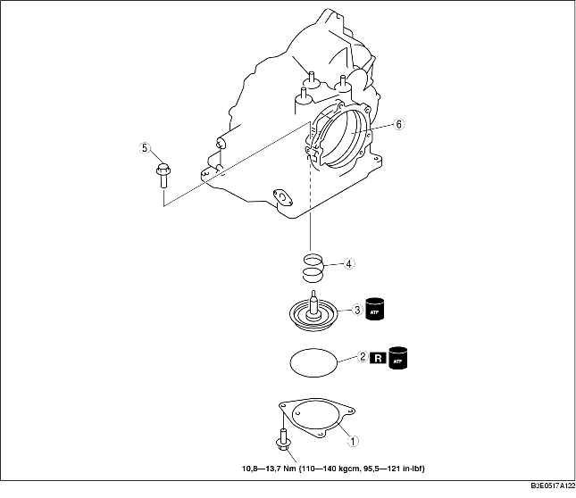

1. Verwijder de onderdelen in de aangegeven volgorde, zie de tabel.
2. Plaats de onderdelen in de omgekeerde volgorde.

1. Meet de vrije lengte van de veer.
Specificatie
|
Diameter (mm {in})
|
Vrije lengte (mm {in})
|
Aantal windingen
|
Draaddiameter
mm {in}
|
|---|---|---|---|
|
34,0 {1,340}
|
36,4 {1,430}
|
2,5
|
4,0 {0,160}
|
2. Plaats de veer van de rembandservo in het transmissiehuis.
3. Plaats de zuiger in het transmissiehuis.
4. Breng ATF aan op een nieuwe O-ring en plaats deze in het transmissiehuis.
5. Plaats de vaste zuiger door de bouten stapsgewijs en gelijkmatig vast te draaien.